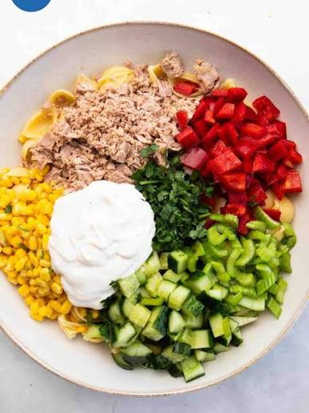

Tuna Sweetcorn Pasta Salad Recipe

Description
Tuna Sweetcorn pasta salad is an easy, large quantity, lunch meal to cover you for about a week in the quantities described.
Ingredients
- 1kg Fusili
- 2 Tins 380g Tuna
- 2 Tins Sweetcorn
- 2 Packets Baby Plum Tomato
- 2 Cucumbers
- Mayo
- Salad Cream
Instructions
- Boil the pasta according to the package instructions.
- Meanwhile, chop the cucumbers into halfed slices and the tomatoes into halves.
- Drain the tuna and the sweetcorn, flake the tuna with a fork.
- Drain the pasta and flush with cold water until chill.
- Combine all ingredients in a large bowl with large quantities of mayo and a small amount of salad cream.
- Mix well and serve.
Home